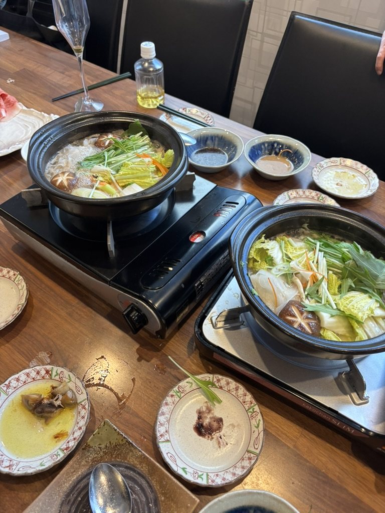
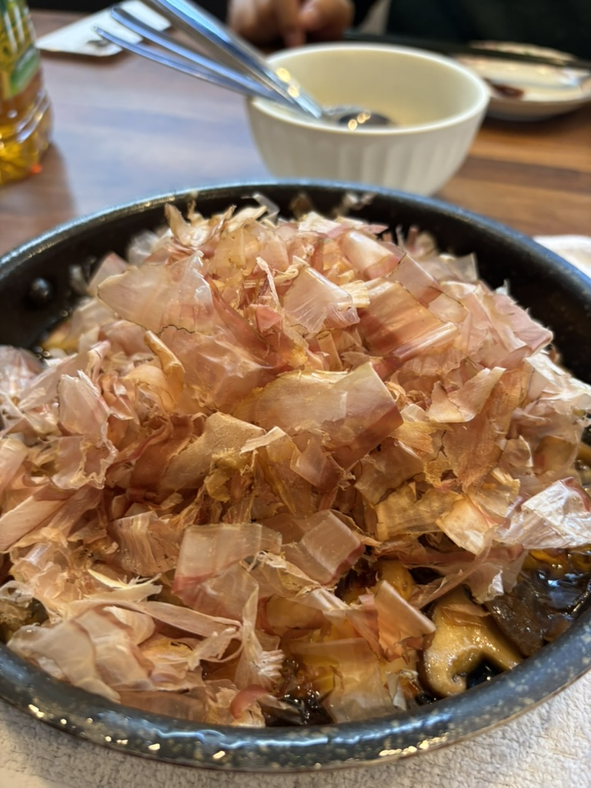
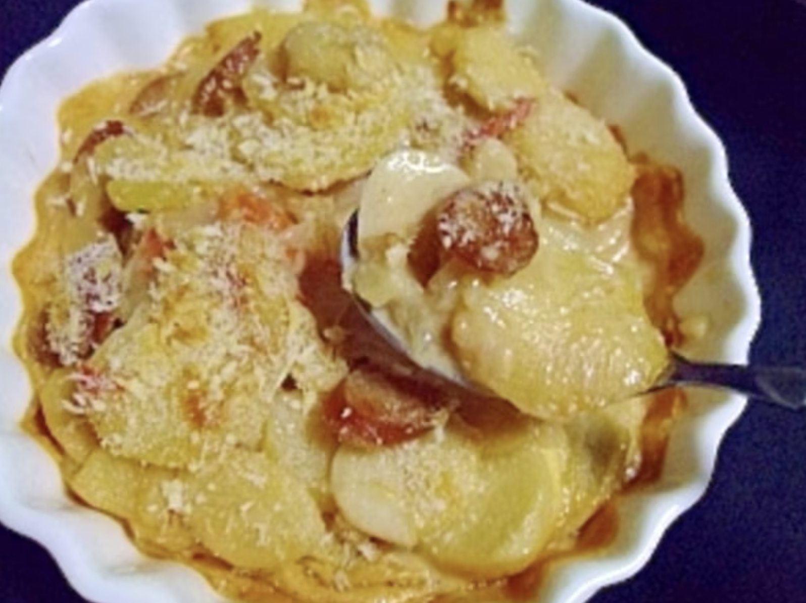
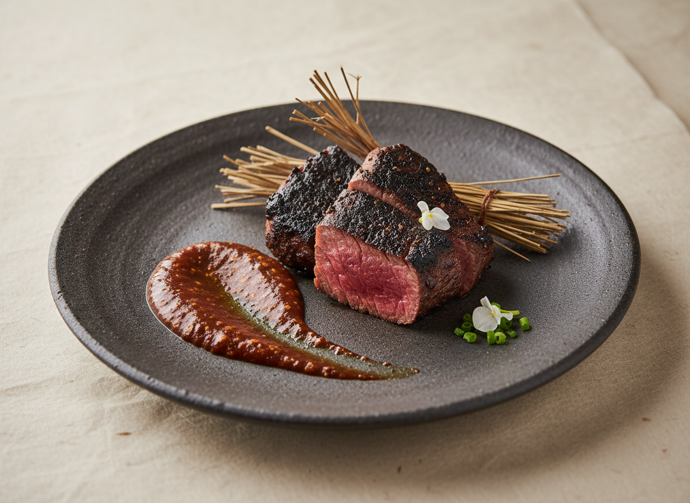
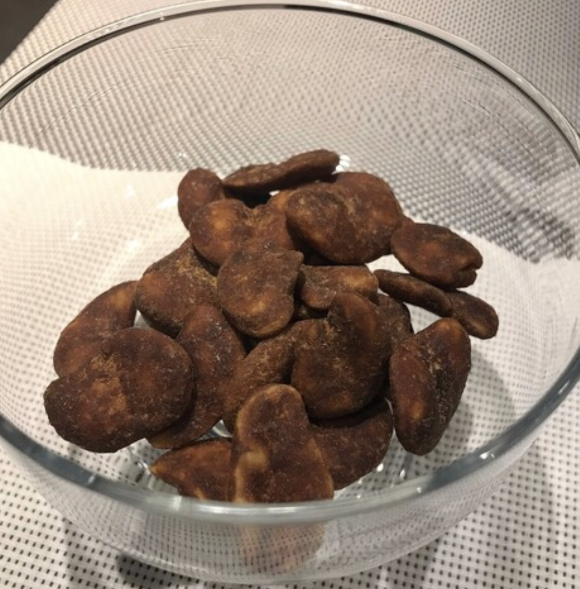
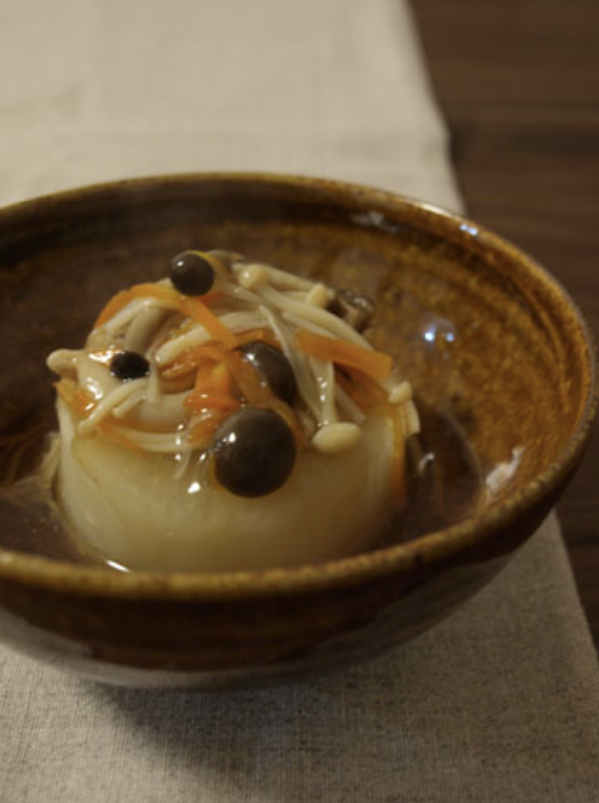
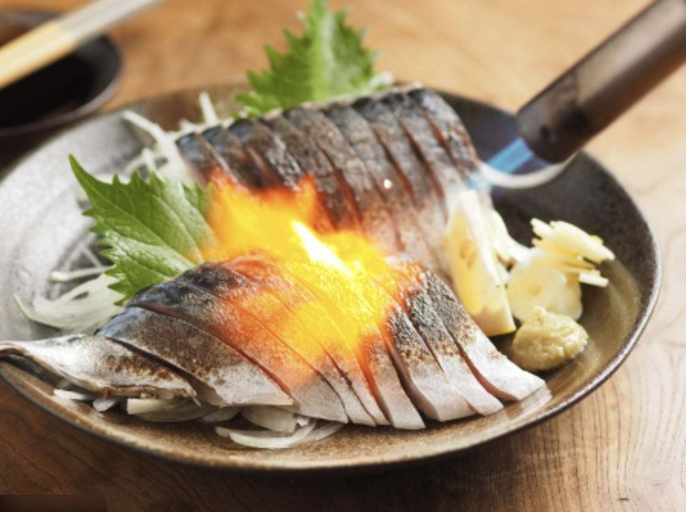
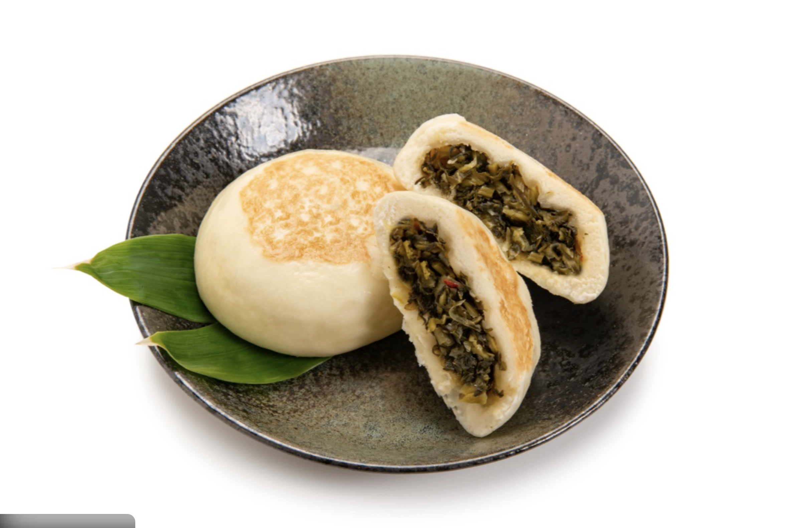

和牛の日本酒しゃぶしゃぶ看板メニュー 3600円（税別）  材料 主材料 和牛(120g), 旬野菜(200g), 豆腐(80g), 〆用うどん(1玉) 主な調味料 日本酒だし(400ml), 昆布(1枚), 塩(2g), 醤油(10ml) 作り方・コメント 調理方法 日本酒×昆布の出汁を温め、和牛と具材をさっとくぐらせる。 テイスティングコメント 日本酒出汁の香りで和牛の甘みが立つ。TSCT看板メニュー。
カプレーゼチーズ料理 1200円（税別） No Image 材料 主材料 フルーツトマト(120g), モッツァレラ(80g), バジル(3g) 主な調味料 EXVオリーブオイル(8ml), 塩(1g), 黒胡椒(0.3g) 作り方・コメント 調理方法 トマトとモッツァレラをスライスして交互に盛り、バジルをのせてオイル・塩胡椒。 テイスティングコメント 瑞々しい酸味とミルキーさ。前菜として軽やかに始められる。
カマンベールときのこアヒージョの花鰹掛けチーズ料理 1400円（税別）  材料 主材料 カマンベール(1/2個), きのこミックス(120g), にんにく(3g) 主な調味料 オリーブオイル(80ml), 塩(1g), 唐辛子(少々), 花鰹(適量) 作り方・コメント 調理方法 小鍋でにんにく香り出し→きのこ→カマンベール。仕上げに花鰹。 テイスティングコメント とろけるチーズときのこの旨味、花鰹の香りが重なる。
チーズ（単品）チーズ料理 680円（税別） No Image 材料 主材料 日替わりチーズ(40g) 主な調味料 はちみつ(3g), 黒胡椒(少々) 作り方・コメント 調理方法 カットして提供。はちみつ・胡椒はお好みで。 テイスティングコメント ミルクのコクをシンプルに楽しむ一皿。
チーズ（盛り合わせ）チーズ料理 1680円（税別） No Image 材料 主材料 日替わりチーズ3種(各30g) 主な調味料 ドライフルーツ(適量), ナッツ(適量), はちみつ(適量) 作り方・コメント 調理方法 盛り合わせて提供。 テイスティングコメント タイプ違いのチーズを食べ比べ。お酒の相手に万能。
和風ドフィノア（ポテトチーズオーブン焼）チーズ料理 1180円（税別）  材料 主材料 じゃがいも(250g), チーズ(80g), 生クリーム(80ml) 主な調味料 味噌(8g), 醤油(3ml), にんにく(2g), 黒胡椒(少々) 作り方・コメント 調理方法 薄切りじゃがいもにソースを絡め耐熱皿へ→チーズ→オーブンで焼成。 テイスティングコメント 濃厚なのに後味は和。味噌のコクがポイント。
季節のフルーツの白和えフルーツ料理 900円（税別） No Image 材料 主材料 季節のフルーツ(120g), 木綿豆腐(80g) 主な調味料 白味噌(8g), すりごま(6g), 砂糖(3g), 塩(少々) 作り方・コメント 調理方法 豆腐を水切りして調味→フルーツと和える。 テイスティングコメント 果実の甘酸っぱさに白味噌のまろやかさ。食中の箸休めに。
生ハムとフルーツ（季節のフルーツ）フルーツ料理 980円（税別） No Image 材料 主材料 生ハム(40g), 季節のフルーツ(120g) 主な調味料 黒胡椒(少々), オリーブオイル(5ml), レモン(少々) 作り方・コメント 調理方法 フルーツをカットして生ハムを添え、オイル・胡椒で仕上げ。 テイスティングコメント 塩気×甘みでお酒が進む定番。
バーニャカウダと蒸し野菜（塩・バーニャソース・味噌ソース）味噌発酵料理 1480円（税別） 材料 主材料 季節野菜(300g) 主な調味料 塩(適量), バーニャカウダソース(80ml), 味噌ソース(40ml) 作り方・コメント 調理方法 野菜を蒸して盛り、3種の味で提供。 テイスティングコメント 野菜の甘みを発酵の旨味で引き立てる。
藁焼き（蝦夷鹿・自家製味噌）味噌発酵料理 1680円（税別）  材料 主材料 蝦夷鹿(120g) 主な調味料 自家製味噌(15g), 醤油(3ml), みりん(3ml), しょうが(2g) 作り方・コメント 調理方法 表面を藁で香り付けしてレアに火入れ。味噌ダレで提供。 テイスティングコメント 藁の香ばしさと赤身の旨味。味噌で余韻を伸ばす。
枝豆居酒屋料理 600円（税別） No Image 材料 主材料 枝豆(200g) 主な調味料 塩(6g) 作り方・コメント 調理方法 塩茹でして提供。 テイスティングコメント 最初の一杯にちょうど良い。
胡麻豆腐パフェ（きんかん・漬け鯛・いくら）居酒屋料理 980円（税別） No Image 材料 主材料 胡麻豆腐(120g), 鯛(30g), いくら(15g), きんかん(20g) 主な調味料 白だし(10ml), 醤油(3ml), みりん(3ml) 作り方・コメント 調理方法 グラスに層状に盛り付け、だしジュレでまとめる。 テイスティングコメント 濃厚ごまのコクに海の旨味が重なる“おつまみパフェ”。
黒糖そら豆居酒屋料理 700円（税別）  材料 主材料 そら豆(120g) 主な調味料 黒糖(10g), 醤油(3ml), みりん(3ml), 塩(少々) 作り方・コメント 調理方法 そら豆を火入れし、黒糖ダレで軽く絡める。 テイスティングコメント ほっくり甘じょっぱく、後を引く。
昆布〆のオリーブ居酒屋料理 750円（税別） No Image 材料 主材料 オリーブ(60g), 昆布(1枚) 主な調味料 オリーブオイル(5ml), 柚子皮(少々) 作り方・コメント 調理方法 オリーブを昆布で挟み冷蔵で半日〜。 テイスティングコメント 旨味がのったオリーブ。日本酒にも合う。
ふろふき大根（きのこ餡掛け）居酒屋料理 780円（税別）  材料 主材料 大根(250g), きのこミックス(80g) 主な調味料 だし(150ml), 醤油(8ml), みりん(8ml), 片栗粉(3g) 作り方・コメント 調理方法 大根を柔らかく煮て、きのこ餡をかける。 テイスティングコメント だしの旨味でほっとする味。
里芋の唐揚げ居酒屋料理 900円（税別） No Image 材料 主材料 里芋(220g) 主な調味料 醤油(8ml), みりん(5ml), にんにく(2g), 片栗粉(適量) 作り方・コメント 調理方法 下味→粉→揚げ。 テイスティングコメント 外カリ中ねっとり。
竜田揚げ居酒屋料理 1100円（税別） No Image 材料 主材料 鶏もも(150g) 主な調味料 醤油(10ml), しょうが(3g), みりん(5ml), 片栗粉(適量) 作り方・コメント 調理方法 漬け込み→粉→揚げ。 テイスティングコメント 香ばしくジューシー。
豚の角煮居酒屋料理 1600円（税別） No Image 材料 主材料 豚バラ(160g), 長ネギ(適量) 主な調味料 醤油(15ml), みりん(15ml), 砂糖(6g), 生姜(5g) 作り方・コメント 調理方法 下茹で→調味で柔らかく煮込む。 テイスティングコメント とろける脂と甘辛だれ。
サラダ（ソースに和ジェノベーゼ）居酒屋料理 880円（税別） No Image 材料 主材料 葉物野菜(120g), 季節野菜(80g) 主な調味料 和ジェノベーゼ(25g), 塩(少々), オイル(5ml) 作り方・コメント 調理方法 野菜を盛り、和ジェノベーゼソースで和える。 テイスティングコメント 香り高くさっぱり。
卵とじ居酒屋料理 900円（税別） No Image 材料 主材料 卵(2個), 玉ねぎ(40g), だし(80ml) 主な調味料 醤油(6ml), みりん(6ml), 砂糖(2g) 作り方・コメント 調理方法 だしで具を煮て卵でとじる。 テイスティングコメント やさしい甘旨。
おこげ居酒屋料理 800円（税別） No Image 材料 主材料 おこげ(80g), 餡（きのこ/海鮮）(100g) 主な調味料 だし(100ml), 醤油(8ml), みりん(8ml), 片栗粉(3g) 作り方・コメント 調理方法 熱々のおこげに餡をかけて提供。 テイスティングコメント 香ばしさととろみのコントラスト。
今日のお刺身（3種盛り）魚料理 1680円（税別） No Image 材料 主材料 鮮魚3種(各40g) 主な調味料 醤油(適量), わさび(適量) 作り方・コメント 調理方法 その日の鮮魚を盛り合わせ。 テイスティングコメント 鮮度と切り方で旨味を引き出す。
今日のお刺身（5種盛り）魚料理 2480円（税別） No Image 材料 主材料 鮮魚5種(各35g) 主な調味料 醤油(適量), わさび(適量) 作り方・コメント 調理方法 その日の鮮魚を盛り合わせ。 テイスティングコメント 多彩な味の違いを楽しむ。
ネギトロエビス最中魚料理 1200円（税別） No Image 材料 主材料 ネギトロ(70g), 最中皮(2枚), 薬味(適量) 主な調味料 醤油(3ml), ごま油(2ml) 作り方・コメント 調理方法 最中皮にネギトロを詰め、薬味で仕上げ。 テイスティングコメント 手でつまめる“和のフィンガーフード”。
〆サバ（炙り）魚料理 980円（税別）  材料 主材料 〆サバ(100g) 主な調味料 ポン酢(5ml), 柚子皮(少々) 作り方・コメント 調理方法 表面を軽く炙って香りを立てる。 テイスティングコメント 脂と酸味のバランスが最高。
ウニプリン魚料理 1600円（税別） No Image 材料 主材料 ウニ(40g), 卵(1個), 生クリーム(30ml) 主な調味料 塩(少々), 醤油(2ml) 作り方・コメント 調理方法 低温でなめらかに蒸し、ウニをのせる。 テイスティングコメント とろける食感と濃厚な海の甘み。
海老の天ぷら（車えび）魚料理 1380円（税別） No Image 材料 主材料 車えび(3尾) 主な調味料 天ぷら粉(30g), 卵(1/2個), だし(適量) 作り方・コメント 調理方法 衣を薄くつけて高温で揚げる。 テイスティングコメント 香ばしく甘い。塩でも天つゆでも。
干物焼き（鮭とば）魚料理 780円（税別） No Image 材料 主材料 鮭とば(60g) 主な調味料 七味(少々), マヨ（任意）(適量) 作り方・コメント 調理方法 軽く炙って提供。 テイスティングコメント 噛むほど旨味、止まらない。
本日のにぎり（3点）食事 1480円（税別） No Image 材料 主材料 にぎり3貫(各1貫) 主な調味料 醤油(適量), わさび(適量) 作り方・コメント 調理方法 当日のおすすめで提供。 テイスティングコメント 締めに軽く食べられる。
本日のにぎり（5点）食事 2180円（税別） No Image 材料 主材料 にぎり5貫(各1貫) 主な調味料 醤油(適量), わさび(適量) 作り方・コメント 調理方法 当日のおすすめで提供。 テイスティングコメント 満足感のある締め。
巻物（紅：サーモン）食事 980円（税別） No Image 材料 主材料 酢飯(160g), 海苔(1枚), サーモン(60g) 主な調味料 醤油(適量), わさび(適量) 作り方・コメント 調理方法 巻いてカットして提供。 テイスティングコメント 脂の甘みが広がる。
巻物（藍：〆さば）食事 980円（税別） No Image 材料 主材料 酢飯(160g), 海苔(1枚), 〆さば(60g) 主な調味料 醤油(適量), ガリ(適量) 作り方・コメント 調理方法 巻いてカットして提供。 テイスティングコメント 酸味と香ばしさで締まる。
ほうじ茶ティラミスデザート 900円（税別） 材料 主材料 マスカルポーネ(80g), ほうじ茶(適量), スポンジ(40g) 主な調味料 砂糖(10g), ココア(少々) 作り方・コメント 調理方法 層にして冷やし固める。 テイスティングコメント 香ばしいほうじ茶の余韻。
アイス（ゆず）デザート 580円（税別） No Image 材料 主材料 ゆずシャーベット(1玉) 主な調味料 ミント(任意) 作り方・コメント 調理方法 盛り付けて提供。 テイスティングコメント さっぱりリセット。
おやきデザート 800円（税別）  材料 主材料 おやき(1個)（野沢菜/あん など日替わり） 主な調味料 醤油(少々)（任意） 作り方・コメント 調理方法 焼き直して提供。 テイスティングコメント 小腹にうれしい〆の一品。